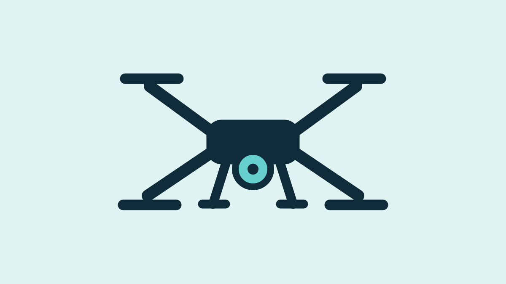

Track the hand
A HoloLens hand-tracking example exposed the joints of the hand as 3D coordinates relative to the headset. That gave me the raw input needed for a physical control interface.
Human-robot interaction · C++ · HoloLens 2 · Bluetooth
FOI had bought a HoloLens 2, but no one in the group had worked with it yet. I was asked to explore what it could be useful for and built a prototype where hand motion became a direct control input to a physical drone.
← Back to projects
The interesting part was creating a shared spatial relationship between the headset, the user's hand and the drone. Once that was in place, the hand could become a surprisingly intuitive controller.
A HoloLens hand-tracking example exposed the joints of the hand as 3D coordinates relative to the headset. That gave me the raw input needed for a physical control interface.
At startup I fixed the headset position as the local origin and placed the drone in a corresponding local frame, with an offset for the natural height difference between the user's head and hand.
In the first control mode, the hand's x, y and z position relative to the HoloLens origin became the target position for the drone in its own local frame.
For a second mode, I formed a plane from several tracked hand points and used its angle to generate a velocity vector. Tilting the hand therefore commanded motion in that direction.
The C++ application sent the commands directly from the HoloLens to the drone over Bluetooth Low Energy. The other hand was used for mode switching and the supporting flight controls.
I started from two pieces that already solved separate problems: a HoloLens example showing how to access the tracked hand joints, and an open-source project that had established BLE communication with a drone. My work was to understand both sides, build the control layer between them and make the complete interaction work on real hardware.
The hardest part was the hand tracking and turning changing joint coordinates into something stable enough to use as a control input. Once the mapping worked, the interaction was more intuitive than I expected and did not need much explanation for someone watching the demo.
My manager liked the first prototype and brought it further through the organisation. It became a recurring demonstration because the full input-to-output chain was immediately visible: move a hand and a real drone responds. I later presented the work as part of an autonomy-lab update to around 300 colleagues.